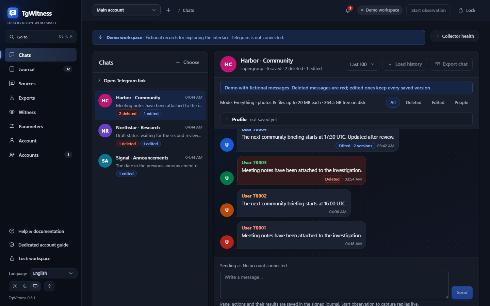
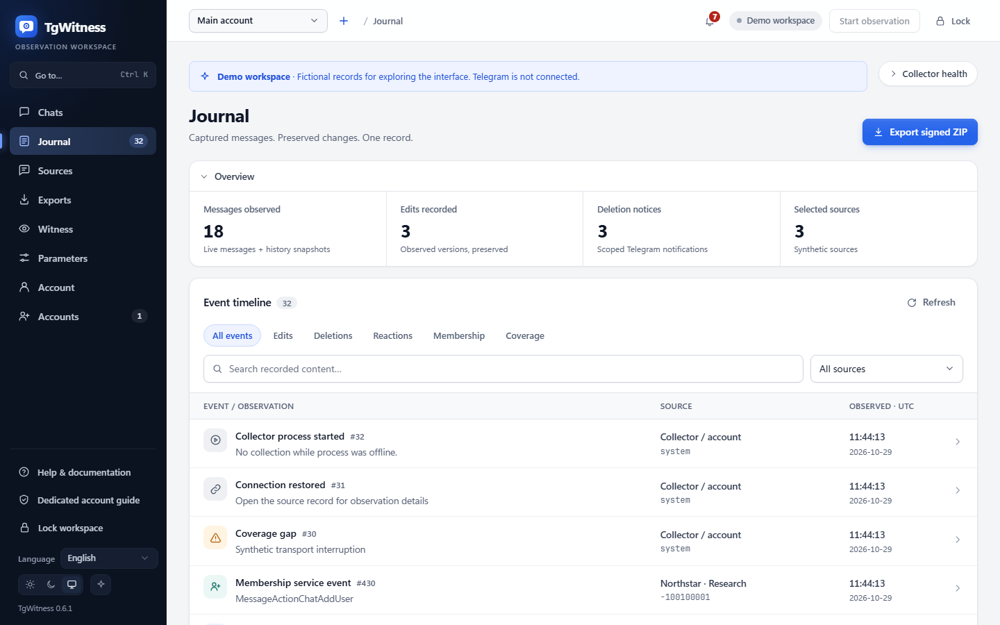
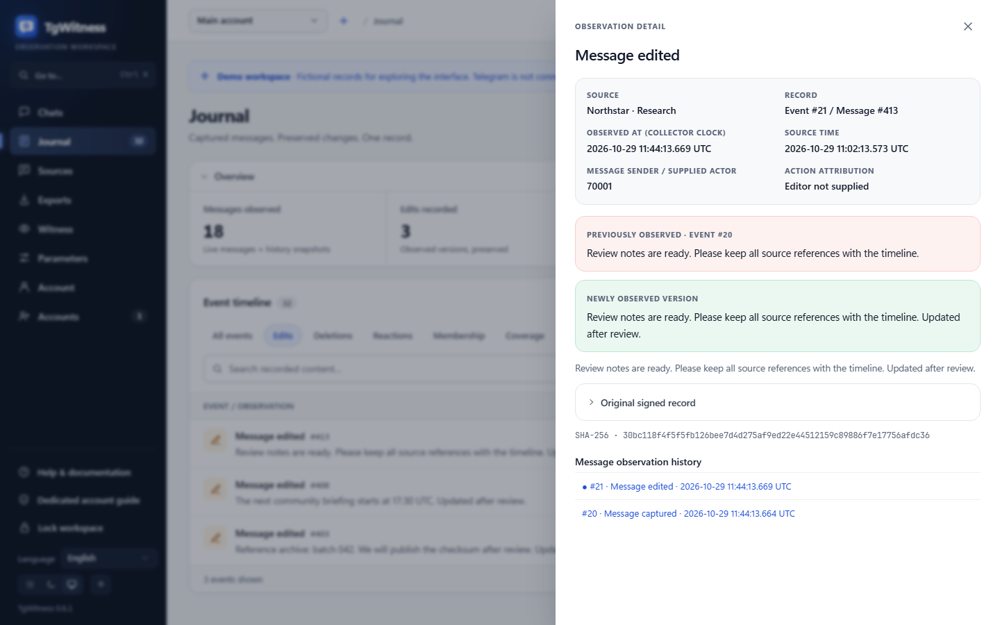
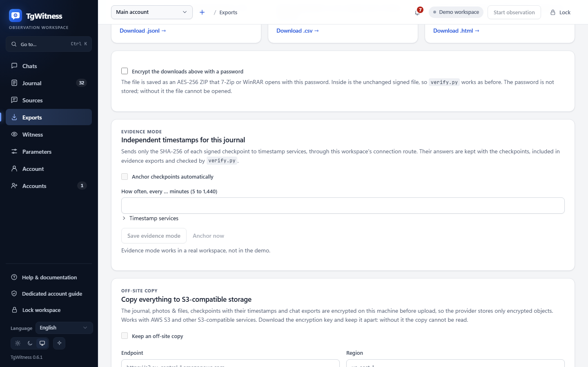

Quý vị tự quyết định phạm vi áp dụng.
Các cuộc trò chuyện đã chọn, một thư mục trên Telegram hoặc toàn bộ tài khoản. Mỗi tài khoản sẽ có một không gian làm việc riêng biệt.
So sánh các chế độ thu thậpGhi lại các tin nhắn Telegram, bảo toàn các thay đổi của chúng và xuất bản ghi có chữ ký.
Bản demo sử dụng dữ liệu giả định. Không yêu cầu đăng nhập Telegram.
Thu thập qua GitHub Actions (bản xem trước) Bản sao lưu ngoài trang web trên S3: thiết lập và khôi phụcBản tóm tắt bắt đầu tại 14:00.
Bản tóm tắt bắt đầu tại 15:00.
Phiên bản trước vẫn được giữ nguyênNội dung được ghi lại sẽ được lưu trữ trong sổ nhật ký của quý vị.
Tin nhắn có thể biến mất. Nhưng lịch sử đã được ghi lại vẫn còn đó.
01 KHÔNG GIAN LÀM VIỆC
Hãy khám phá giao diện với dữ liệu minh họa giả định.




Các cuộc trò chuyện đã chọn, một thư mục trên Telegram hoặc toàn bộ tài khoản. Mỗi tài khoản sẽ có một không gian làm việc riêng biệt.
So sánh các chế độ thu thậpCác phiên bản đã được “Captured”, thông báo xóa và các khoảng trống trong quá trình quan sát vẫn được lưu giữ trong nhật ký.
Xem ma trận sự kiệnTệp ZIP được ký số, các tệp được bảo toàn và báo cáo ngoại tuyến. Tùy chọn bảo vệ bằng mật khẩu.
Xuất và xác minhCÁCH THỨC HOẠT ĐỘNG CỦA HỆ THỐNG GHI CHÉP
Mỗi sự kiện đều có liên kết đến mã băm trước đó và đi kèm với chữ ký Ed25519.



Hãy tìm hiểu xem từng cơ chế xác minh thiết lập những gì, cũng như những hạn chế của chúng nằm ở đâu.
Khám phá tám cấp độ bằng chứngĐƯỢC PHÁT TRIỂN ĐỂ PHỤC VỤ VIỆC KIỂM TRA
Chuyển giao các dữ liệu quan sát, tệp tin và báo cáo HTML ngoại tuyến trong một gói dữ liệu đã được ký số.
Xem mô hình bằng chứngCác chữ ký dùng để phát hiện hành vi giả mạo dựa trên một khóa tin cậy. Chúng không chứng minh nguồn gốc từ Telegram cũng như không đảm bảo việc ghi lại đầy đủ. Nội dung nhật ký và các tệp đa phương tiện cần được lưu trữ dưới dạng mã hóa do quý vị cung cấp.
LƯU TRỮ, TÍNH LIÊN TỤC VÀ XÁC MINH
Giữ lại các bản sao được mã hóa và bổ sung các cơ chế kiểm tra độc lập.
XUẤT → BẢN SAO NGOÀI TRANG WEB
Tắt theo mặc địnhNhật ký, tệp tin, các điểm kiểm tra có dấu thời gian và dữ liệu xuất từ cuộc trò chuyện — đều được mã hóa trước khi tải lên AWS S3 hoặc các dịch vụ lưu trữ tương thích.
AES-256-GCM mã hóa các đối tượng trên máy này. Nhà cung cấp sẽ nhận được các đối tượng đã được mã hóa.
AES-256-GCMBộ lưu trữ tương thích với S3Những điều không thực hiện Công cụ này không thể khôi phục dữ liệu nếu thiếu khóa giải mã đã xuất ra, cũng như không thể thay thế vai trò của một nhân chứng độc lập.
Cảnh báo sự cố, thay đổi trong cuộc trò chuyện và bản tóm tắt hàng ngày qua Apprise: các ứng dụng nhắn tin, email hoặc webhook JSON của riêng quý vị.
Không thực hiện Nó sẽ không gửi nội dung tin nhắn trừ khi quý vị bật tính năng trích dẫn.
Cấu hình điểm đến thông báoTạo băm điểm kiểm tra dấu thời gian bằng RFC 3161 và OpenTimestamps.
Những điều không thực hiện Công cụ này không coi biên nhận lịch đang chờ xử lý là dấu thời gian Bitcoin đã được xác nhận.
Kiểm tra bằng chứng dấu thời gianMột máy chủ riêng biệt sẽ lưu trữ các quan sát đã được ký và có thể công bố TGW1 các điểm kiểm tra.
Những điều không thực hiện Việc này không biến hai không gian làm việc trên cùng một máy chủ thu thập dữ liệu thành các nhân chứng độc lập.
Thiết lập một WitnessTiếp tục sau khi khởi động lại. Kiểm tra lại và coverage.json hiển thị các tin nhắn đã khôi phục cùng các khoảng trống.
Những điều không thực hiện Công cụ này không tái tạo lại mọi thao tác chỉnh sửa bị bỏ sót hoặc tin nhắn đã biến mất.
Kiểm tra tính liên tục và các khoảng trốngTRÊN MÁY CỦA QUÝ VỊ
Hãy khám phá bản demo trước tiên. Khi đã sẵn sàng, quý vị hãy kết nối với một tài khoản chuyên dụng. Hỗ trợ Windows, Linux, macOS hoặc Docker.
Xin vui lòng tham khảo hướng dẫn cài đặtHãy thử không gian làm việc giả định này mà không cần tài khoản Telegram.
scripts\Demo.cmdLinux / macOS sh start.sh --demoVui lòng tải xuống tệp ZIP nguồn và giải nén, hoặc sao chép kho lưu trữ:
git clone https://github.com/phishdestroy/TgWitness.git
cd TgWitnessViệc khởi chạy ứng dụng yêu cầu Python 3.11 trở lên. Trình khởi chạy trên Windows sẽ tự động cài đặt Python nếu hệ thống chưa có.
Xem các bản phát hànhKhông có Python trên Windows? Vui lòng tải xuống gói phần mềm di động, giải nén và nhấp đúp vào tệp TgWitness.cmd.
Nhấp đúp vào tệp Start.cmd hoặc chạy lệnh trong PowerShell:
.\Start.cmdChỉ đang tìm hiểu sơ qua? Vui lòng nhấp đúp vào scripts\Demo.cmd để trải nghiệm bản demo độc lập. Không cần đăng nhập Telegram.
Với Python 3.11 trở lên và venv:
sh start.shĐể mở sổ nhật ký giả định này, vui lòng chạy lệnh sh start.sh --demo.
Khi Docker đã được khởi chạy và Compose phiên bản 2.20 trở lên đã được cài đặt:
docker compose up -d --build --wait
docker compose exec tgwitness cat /data/panel-token.txtLệnh thứ hai sẽ hiển thị mã thông báo bảng điều khiển riêng tư của quý vị. Vui lòng lưu giữ mã này trên thiết bị của quý vị.
Vui lòng truy cập 127.0.0.1:8787 sau khi khởi chạy.
Đối với các bản cài đặt từ nguồn, mã thông báo nằm trong data/live/panel-token.txt. Việc đăng nhập bằng Telegram có thể sử dụng cài đặt API tích hợp sẵn hoặc cặp khóa riêng của quý vị từ my.telegram.org. Hướng dẫn thiết lập đầy đủ ↗
TgWitness 0.7.0 Có gì mới → · Các tính năng và giới hạn đã biết →
MỖI LẦN CHỈ THỰC HIỆN MỘT NHIỆM VỤ
Bốn chế độ thu thập. Tám cấp độ xác minh. Hãy tìm quy trình làm việc phù hợp với trường hợp của quý vị.
Hỗ trợ nhập dữ liệu từ điện thoại, mã QR và các phiên làm việc được hỗ trợ.
Danh sách MTProxy công khai hoặc tuyến đường riêng của quý vị.
Các mốc kiểm tra có chữ ký trong kênh Telegram của quý vị.
Chia sẻ lịch sử đã ghi lại và kiểm tra tính toàn vẹn của nó.
Không. Đây là trang dự án tĩnh với các ví dụ và ảnh chụp màn hình mang tính hư cấu. Ứng dụng thực tế sẽ chạy trên máy tính hoặc máy chủ của quý vị; quá trình đăng nhập diễn ra tại đó.
Không. TgWitness chỉ lưu giữ nội dung mà tài khoản của quý vị đã quan sát được trong thời gian quá trình thu thập dữ liệu đang diễn ra. Một bản chụp lịch sử được thực hiện sau đó sẽ không thể tái tạo lại các thao tác chỉnh sửa bị bỏ sót hoặc các tin nhắn đã bị xóa.
Thông tin đăng nhập tài khoản và khóa ký được lưu trữ trong một kho dữ liệu được mã hóa. Các tin nhắn và tệp đính kèm cục bộ cần được lưu trữ trên một đĩa hoặc phân vùng được mã hóa. Khi xuất dữ liệu, người dùng có thể tùy chọn sử dụng tệp ZIP được mã hóa theo tiêu chuẩn AES-256 và bảo vệ bằng mật khẩu.
Không. TgWitness là một dự án độc lập sử dụng Telethon, được phân phối theo Giấy phép MIT. Quý vị sẽ tự thực hiện việc ủy quyền cho các tài khoản của mình, thông qua cài đặt API tích hợp sẵn hoặc cặp API riêng của quý vị.
PROJECT NOTICE / LICENCE
Taylor Wessing PartG mbB — German core, Hamburg office.
Our statement as the authors of TgWitness. It adds no condition to the MIT License. Read the complete notice and its source record.
BƯỚC TIẾP THEO CỦA QUÝ VỊ